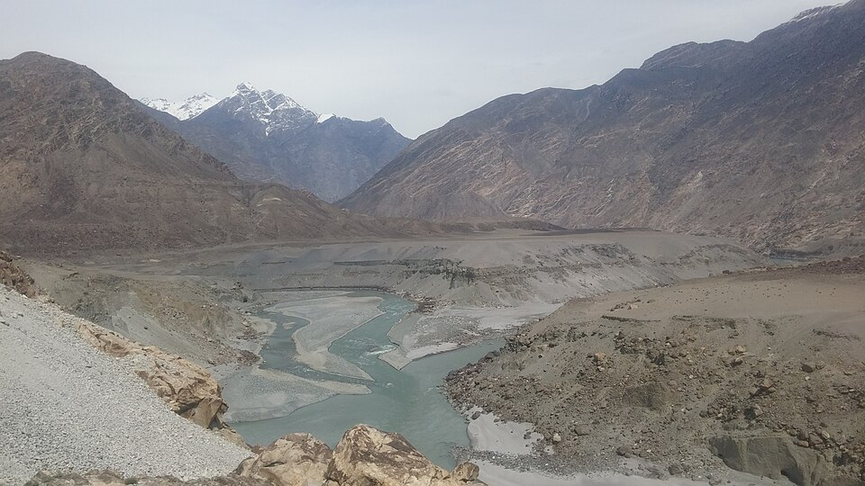

उत्तर प्रदेश विधानसभा चुनाव 2027: अगले महीने से यूपी दौरे शुरू कर सकते हैं अमित शाह
भारतीय जनता पार्टी ने उत्तर प्रदेश विधानसभा चुनाव 2027 की तैयारियां तेज कर दी हैं। केंद्रीय गृह मंत्री अमित शाह अगले महीने से राज्य के दौरे शुरू कर सकते हैं, जिसके तहत संगठनात्मक मजबूती और चुनावी रणनीति पर फोकस रहेगा।
ताज़ा ख़बरें
 खेल
खेलराइजिंग स्टार एशिया कप: पाकिस्तान ए ने भारत ए को 48 रनों से हराया
राइजिंग स्टार एशिया कप के मुकाबले में पाकिस्तान ए ने भारत ए को 48 रनों से हरा दिया। अभिषेक शर्मा और कप्तान तिलक वर्मा के शानदार प्रदर्शन के बावजूद भारतीय टीम लक्ष्य हासिल करने में नाकाम रही।
अंतरराष्ट्रीयअमेरिका के ओहायो में बेबी शॉवर के दौरान गोलीबारी, संदिग्ध समेत तीन की मौत
अमेरिका के ओहायो राज्य में एक गोद भराई समारोह के दौरान हुई गोलीबारी में संदिग्ध हमलावर समेत तीन लोगों की मौत हो गई और एक महिला घायल हो गई। पुलिस मामले की जांच कर रही है।
राष्ट्रीयबिहार का बख्तियारपुर-ताजपुर महासेतु 15 साल बाद भी अधूरा, अब जून 2027 की नई डेडलाइन
बिहार के बख्तियारपुर-ताजपुर महासेतु का निर्माण 15 साल बाद भी पूरा नहीं हुआ है। देरी के कारण परियोजना की लागत बढ़कर ₹4,572 करोड़ हो गई है, और अब इसे जून 2027 तक चालू करने का नया लक्ष्य रखा गया है।
राष्ट्रीयअखिलेश यादव अयोध्या जाने से पहले प्रायश्चित करें: बृजभूषण शरण सिंह
पूर्व भाजपा सांसद बृजभूषण शरण सिंह ने गोंडा में कहा कि अखिलेश यादव को अयोध्या दौरे से पहले संतों का प्रायश्चित वाला वचन मान लेना चाहिए। उन्होंने ओवैसी और चंद्रशेखर के गठबंधन को बेमेल बताया।
राष्ट्रीयवैशाली के नीतीश सेतु पर पीएम मोदी का पोस्टर फाड़ने के मामले में तीन गिरफ्तार
बिहार के वैशाली जिले में नीतीश सेतु पर प्रधानमंत्री नरेंद्र मोदी और अन्य एनडीए नेताओं के पोस्टर फाड़ने और हंगामा करने के आरोप में पुलिस ने तीन लोगों को गिरफ्तार किया है।
 राष्ट्रीय
राष्ट्रीयउत्तर प्रदेश चुनाव: सीट शेयरिंग को लेकर सपा और कांग्रेस की बैठक आज
उत्तर प्रदेश विधानसभा चुनाव के लिए समाजवादी पार्टी और कांग्रेस के बीच सीट बंटवारे पर दिल्ली में सोमवार से पहले दौर की बैठक शुरू हो रही है। दोनों दलों की समन्वय समितियां इस पर मंथन करेंगी।
अंतरराष्ट्रीयएशिया पावर इंडेक्स 2026: भारत तीसरे स्थान पर मजबूत, चीन शीर्ष पर
लोवी इंस्टीट्यूट के एशिया पावर इंडेक्स 2026 के अनुसार, भारत 40.5 अंकों के साथ एशिया का तीसरा सबसे ताकतवर देश बना हुआ है। कूटनीति और रक्षा सहयोग में सुधार से क्षेत्रीय प्रभाव बढ़ा है।
राष्ट्रीयफिक्की कार्यक्रम में पीएम मोदी ने उद्योग जगत से रोजगार और वेतन पर किए सवाल
प्रधानमंत्री नरेंद्र मोदी ने फिक्की के कार्यक्रम में उद्योग जगत पर सवाल उठाते हुए कहा कि कॉर्पोरेट मुनाफे के बावजूद कर्मचारियों के वेतन और नौकरियों में अपेक्षित बढ़ोतरी नहीं हुई है। उन्होंने गुणवत्ता और स्वदेशी अपनाने पर भी जोर दिया।
राष्ट्रीयझारखंड के दुमका में कोल ब्लॉक सर्वे का विरोध, ग्रामीणों से झड़प में 12 जवान घायल
झारखंड के दुमका जिले में कोल ब्लॉक सर्वे के दौरान ग्रामीणों और पुलिसकर्मियों के बीच तीखी झड़प हो गई। इस दौरान ग्रामीणों ने कंपनी के अधिकारियों को बंधक बना लिया और पथराव में 12 जवान घायल हो गए।
राष्ट्रीयइंदौर डबल मर्डर मामला: गोद लिए बेटे ने संपत्ति विवाद में की पिता और बहन की हत्या
मध्य प्रदेश के इंदौर में हुए दोहरे हत्याकांड में चौंकाने वाला खुलासा हुआ है। संपत्ति विवाद को लेकर 28 साल पहले गोद लिए गए बेटे ने ही पिता और बहन की हत्या की थी।
राष्ट्रीयझारखंड के पूर्व मुख्यमंत्री अर्जुन मुंडा की मां सायरा मुंडा का निधन
झारखंड के पूर्व मुख्यमंत्री और भाजपा नेता अर्जुन मुंडा की मां सायरा मुंडा का लंबी बीमारी के बाद 91 वर्ष की आयु में निधन हो गया है। उनका अंतिम संस्कार सोमवार को किया जाएगा।
राष्ट्रीयआजम खान का ओवैसी और चंद्रशेखर पर निशाना, अखिलेश पर भी रखी बात
समाजवादी पार्टी नेता आजम खान ने एक इंटरव्यू में AIMIM प्रमुख असदुद्दीन ओवैसी को लेकर तीखे बयान दिए और चंद्रशेखर आजाद पर गद्दारी का आरोप लगाया। साथ ही अखिलेश यादव के साथ अपने संबंधों पर भी बात की।
 अंतरराष्ट्रीय
अंतरराष्ट्रीयसैन्य ताकत सिर्फ आत्मरक्षा के लिए, विस्तारवादी इरादा नहीं: किम जोंग उन
उत्तर कोरियाई नेता किम जोंग उन ने कहा है कि उनका देश अपनी सैन्य क्षमता केवल आत्मरक्षा के लिए विकसित कर रहा है और संप्रभुता का सम्मान करने वाले सभी देशों के साथ संबंध बढ़ाने को तैयार है।
खेलराइजिंग स्टार्स एशिया कप: पाकिस्तान ए के खिलाफ हार के बाद आलोचनाओं से घिरे तिलक वर्मा
राइजिंग स्टार्स एशिया कप में पाकिस्तान ए के खिलाफ हार के बाद भारत ए के कप्तान तिलक वर्मा की मैच के बाद की टिप्पणियों पर सोशल मीडिया पर तीखी प्रतिक्रिया देखने को मिली है।
राष्ट्रीयलखनऊ में पुणे-पटना इंडिगो फ्लाइट की आपात लैंडिंग, खराब मौसम बना कारण
पटना में खराब मौसम और कम दृश्यता के कारण पुणे से पटना जा रही इंडिगो की उड़ान को लखनऊ डायवर्ट करना पड़ा, जहां सोमवार तड़के विमान सुरक्षित उतरा गया।
 अंतरराष्ट्रीय
अंतरराष्ट्रीयपाकिस्तानी मंत्री मोसद्दिक़ मलिक का भारत दौरा, एससीओ सम्मेलन में लिया हिस्सा
पाकिस्तान के केंद्रीय मंत्री मोसद्दिक़ मलिक शंघाई सहयोग संगठन के सम्मेलन में हिस्सा लेने भारत पहुंचे। मई 2025 के सैन्य संघर्ष के बाद यह किसी पाकिस्तानी मंत्री की पहली भारत यात्रा है।

अंतरराष्ट्रीयहिंदूकुश हिमालय क्षेत्र में मजबूत अल-नीनो से भूस्खलन और बाढ़ का खतरा
मजबूत अल-नीनो के चलते हिंदूकुश हिमालय क्षेत्र में सामान्य से अधिक बारिश, बर्फबारी और ठंड का अनुमान है। इससे नेपाल, अफगानिस्तान और बांग्लादेश में बाढ़ और भूस्खलन का खतरा बढ़ गया है।
राष्ट्रीयनवी मुंबई के तुर्भे स्थित एमआईडीसी ऑयल वेयरहाउस में लगी भीषण आग
नवी मुंबई के तुर्भे में महाराष्ट्र औद्योगिक विकास निगम के ऑयल वेयरहाउस में भीषण आग लग गई है। दमकल विभाग की टीमें मौके पर पहुंचकर आग बुझाने के काम में जुटी हैं।
राष्ट्रीयपैर की चोट के कारण अभिनेता मनीष गोयल ने छोड़ा 'बिग बॉस 20'
पैर में गंभीर चोट और डॉक्टरों की सलाह के बाद अभिनेता मनीष गोयल ने रियलिटी शो 'बिग बॉस 20' को बीच में ही अलविदा कह दिया है।
राष्ट्रीयनतेश तिवारी की 'रामायण' का बॉक्स ऑफिस पर धमाल, 18 दिनों में कमाई ₹1693 करोड़ पार
नतेश तिवारी के निर्देशन में बनी पौराणिक फिल्म 'रामायण: पार्ट 1' बॉक्स ऑफिस पर शानदार प्रदर्शन कर रही है। फिल्म ने 18 दिनों में दुनिया भर में ₹1,693 करोड़ से अधिक की कुल कमाई कर ली है।
राष्ट्रीयसीएम योगी आदित्यनाथ ने मां को समर्पित किया भावुक पत्र
उत्तर प्रदेश के मुख्यमंत्री योगी आदित्यनाथ ने मां के नाम एक भावुक पत्र लिखा है, जिसमें उन्होंने संन्यास के बाद मां से भिक्षा मांगने और उनके साथ जुड़े संस्मरणों को साझा किया है।
 व्यापार
व्यापारइस हफ्ते बैंकों में छुट्टियों की भरमार, मेघालय से लेकर कई राज्यों में बंद रहेंगी शाखाएं
आरबीआई की छुट्टियों की लिस्ट के अनुसार, 23 से 29 नवंबर के बीच विभिन्न त्योहारों और साप्ताहिक अवकाश के चलते अलग-अलग राज्यों में बैंक शाखाएं बंद रहेंगी।
 अंतरराष्ट्रीय
अंतरराष्ट्रीयतुर्की में आयोजित कॉप-31 जलवायु सम्मेलन बिना किसी समझौते के समाप्त
तुर्की के अंताल्या में आयोजित कॉप-31 जलवायु सम्मेलन बिना किसी समझौते के समाप्त हो गया। यूरोपीय संघ समेत कई देशों ने फ़ाइनल ड्राफ़्ट को ख़ारिज कर दिया, जिस पर संयुक्त राष्ट्र महासचिव ने गहरी निराशा जताई है।
 अंतरराष्ट्रीय
अंतरराष्ट्रीयअमेरिकी प्रतिनिधि सभा में डेमोक्रेट्स को मिला ऐतिहासिक बहुमत, जीते 258 सीट
अमेरिकी मध्यावधि चुनावों में डेमोक्रेटिक पार्टी ने प्रतिनिधि सभा में 258 सीटों पर जीत दर्ज कर ली है। यह 1992 के बाद से किसी भी पार्टी का सबसे बड़ा बहुमत है।
 राष्ट्रीय
राष्ट्रीयदिल्ली के निजी स्कूलों में नर्सरी दाखिला प्रक्रिया शुरू, एक दिसंबर से करें आवेदन
दिल्ली के निजी स्कूलों में शैक्षणिक सत्र 2027-28 के लिए नर्सरी और अन्य प्रारंभिक कक्षाओं में दाखिला प्रक्रिया शुरू हो गई है। स्कूल सोमवार से अपने मानदंड अपलोड करेंगे, जबकि एक दिसंबर से आवेदन किए जा सकेंगे।
 राष्ट्रीय
राष्ट्रीयदिल्ली मेट्रो मैजेंटा लाइन पर छह नए स्टेशन जनवरी 2027 तक होंगे शुरू
दिल्ली मेट्रो की मैजेंटा लाइन पर छह नए स्टेशनों का निर्माण कार्य पूरा हो चुका है। इनके शुरू होने से दिल्ली से नोएडा और गुरुग्राम के बीच सफर करने वाले यात्रियों को बड़ी राहत मिलने की उम्मीद है।
राष्ट्रीयशहरी भारत में बदल रहा संयुक्त परिवार का स्वरूप, एक ही सोसाइटी में अलग फ्लैट ले रहे परिवार
महंगे मकानों और निजी जिंदगी की चाह के बीच शहरों में संयुक्त परिवार का नया मॉडल सामने आ रहा है। इसमें माता-पिता और बच्चे एक ही हाउसिंग सोसाइटी में अलग-अलग फ्लैटों में रहकर एक-दूसरे का सहयोग कर रहे हैं।
राष्ट्रीयमहाराष्ट्र के अकोला में चलती ट्रेन से उतरे युवक को ASI ने बचाया
अकोला रेलवे स्टेशन पर वीडियो कॉल करते हुए चलती ट्रेन से उतर रहा 24 वर्षीय युवक प्लेटफॉर्म और ट्रेन के बीच फंस गया था. रेलवे पुलिस के ASI ने तत्परता दिखाते हुए उसकी जान बचाई.
 खेल
खेलभारत-न्यूजीलैंड पहला टेस्ट: पांचवें दिन भारत को मिली पहली सफलता, डेवोन कॉनवे आउट
भारत और न्यूजीलैंड के बीच पहले टेस्ट मैच के पांचवें दिन भारतीय गेंदबाजों ने अच्छी शुरुआत की है। वॉशिंगटन सुंदर ने डेवोन कॉनवे को आउट कर टीम इंडिया को दिन की पहली सफलता दिलाई।
 अंतरराष्ट्रीय
अंतरराष्ट्रीयब्रिटिश शाही परिवार में नया दावा, राजा बनते ही हैरी की उपाधियां बदल सकते हैं प्रिंस विलियम
शाही लेखक टॉम साइक्स की नई किताब में दावा किया गया है कि प्रिंस विलियम राजा बनने के बाद शाही नियमों में बदलाव कर सकते हैं, जिससे प्रिंस हैरी और मेगन की उपाधियां प्रभावित हो सकती हैं। केंसिंग्टन पैलेस ने इस पर कोई टिप्पणी नहीं की है।
 खेल
खेलभारत और न्यूजीलैंड के बीच वेलिंगटन टेस्ट का पांचवां और आखिरी दिन
भारत और न्यूजीलैंड के बीच खेले जा रहे पहले टेस्ट मैच का पांचवां और अंतिम दिन है। न्यूजीलैंड ने दूसरी पारी में दो विकेट पर 130 रन से आगे खेलना शुरू किया है।
राष्ट्रीयनवी मुंबई की ऑयल कंपनी में भीषण आग, प्लाईवुड और कूरियर दफ्तर भी चपेट में
नवी मुंबई के वाशी सेक्टर-18 में एक ऑयल कंपनी में रविवार रात भीषण आग लग गई, जो फैलकर प्लाईवुड और कूरियर कंपनियों तक पहुंच गई। रातभर चले रेस्क्यू ऑपरेशन के बाद किसी के हताहत होने की खबर नहीं है।
 राष्ट्रीय
राष्ट्रीयउत्तर भारत में ठंड और बढ़ी, हिमाचल के ताबो में पारा माइनस 4.6 डिग्री पहुंचा
पर्वतीय राज्यों में बर्फबारी और चक्रवात अकवान के असर से उत्तर भारत में ठंड बढ़ने लगी है। हिमाचल प्रदेश के ताबो में न्यूनतम तापमान माइनस 4.6 डिग्री दर्ज किया गया, जबकि कई राज्यों में कोहरे और बारिश का अनुमान है।
अंतरराष्ट्रीयअमेरिका में और आ सकते हैं टेक्नोलॉजी आउटेज, इंटेलिजेंस चीफ की चेतावनी
यूएस डायरेक्टर ऑफ नेशनल इंटेलिजेंस जे क्लेटन ने चेतावनी दी है कि पुराने सिस्टम अपग्रेड होने के कारण अमेरिका में आने वाले दिनों में और अधिक टेक्नोलॉजी आउटेज और सर्विस में रुकावटें आ सकती हैं।
 अंतरराष्ट्रीय
अंतरराष्ट्रीयअमेरिका में पुराने सिस्टम अपग्रेड होने से आ सकती हैं तकनीकी बाधाएं
यूएस डायरेक्टर ऑफ नेशनल इंटेलिजेंस जे क्लेटन ने चेतावनी दी है कि सिस्टम अपग्रेड के कारण अमेरिका में आने वाले दिनों में टेक्नोलॉजी आउटेज और सर्विस में रुकावटें आ सकती हैं।
 राष्ट्रीय
राष्ट्रीयकंगना रनौत ने किया ताजमहल का दौरा, राहुल गांधी पर साधा निशाना
बीजेपी सांसद कंगना रनौत ने परिवार के साथ ताजमहल का दौरा किया और कांग्रेस नेता राहुल गांधी की अर्थव्यवस्था संबंधी टिप्पणी पर तीखा हमला बोला।
राष्ट्रीयसाइबर ठगी से निपटने के लिए दिल्ली-एनसीआर में ‘कम्युनिटी शील्ड’ पहल शुरू
दिल्ली-एनसीआर की सोसायटियों में बुजुर्गों को ‘डिजिटल अरेस्ट’ और साइबर ठगी से बचाने के लिए पुलिस, आरडब्ल्यूए और पड़ोसियों ने मिलकर ‘कम्युनिटी शील्ड’ यानी ‘बडी सिस्टम’ की शुरुआत की है।
राष्ट्रीययूपी चुनाव 2027: आज़म खान के बयान पर सियासत, AIMIM ने बंटवाई हैदराबादी बिरयानी
उत्तर प्रदेश में 2027 के विधानसभा चुनाव से पहले आज़म खान के बयान के बाद AIMIM ने इटावा में हैदराबादी बिरयानी बंटवाई। पार्टी नेताओं ने आगामी चुनाव में बड़े पैमाने पर मुस्लिम समर्थन मिलने का दावा किया है।
राष्ट्रीयपंजाब चुनाव और राजस्थान की राजनीति पर सचिन पायलट का बड़ा बयान
कांग्रेस नेता सचिन पायलट ने एक साक्षात्कार में पंजाब विधानसभा चुनाव की तैयारियों और राजस्थान पंचायत चुनाव में पार्टी की सफलता पर अपनी बात रखी।